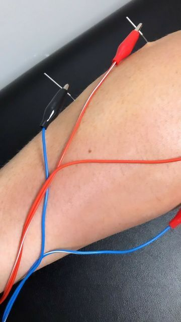

01
Assessment First
Your physiotherapist assesses your symptoms, movement and functional requirements before considering Dry Needling.
Therapeutic taping techniques designed to support muscles, joints and movement during rehabilitation.

Dry Needling is a physiotherapy technique involving the use of fine, sterile needles under professional supervision. It may be considered when appropriate for a person's assessment and rehabilitation goals.
Your physiotherapist will first assess your symptoms, movement and functional needs before deciding whether this approach is appropriate as part of your treatment programme.
Treatment is selected according to your symptoms, condition and rehabilitation requirements.
Fine needles may be used to target selected muscular areas when clinically appropriate.
Dry Needling may be combined with exercise, manual therapy and other physiotherapy approaches.
Dry Needling is a technique used by appropriately trained healthcare professionals in which fine, sterile needles are inserted into selected tissues. Its suitability depends on an individual clinical assessment.
Your physiotherapist assesses your symptoms, movement and functional requirements before considering Dry Needling.
Very fine sterile needles are used under appropriate clinical and hygiene procedures by a trained professional.
When appropriate, the technique may be used alongside exercise and other rehabilitation strategies.
Depending on your clinical assessment, Dry Needling may be considered for selected muscular and movement-related conditions.
May be considered as part of rehabilitation for selected muscular problems affecting the neck and shoulder region.
Can be considered alongside a broader physiotherapy programme for appropriate muscular and movement-related concerns.
Selected muscular areas around the hip may be assessed when determining appropriate treatment options.
Depending on the condition, selected lower limb muscles may be included in a treatment programme.
It may be incorporated into rehabilitation following appropriate assessment of movement and muscular function.
A physiotherapist may consider the technique when selected muscular restrictions are relevant to functional movement.
Dry Needling is not appropriate for every person. Your physiotherapist will determine whether it is suitable based on your assessment, health status and treatment goals.
The technique can be directed towards selected areas identified during clinical assessment.
It may be included within a rehabilitation programme designed to support movement and function.
Treatment decisions are based on the individual's assessment and clinical requirements.
Where appropriate, Dry Needling may be combined with exercise and other physiotherapy interventions.
Discuss your symptoms, medical history, concerns and rehabilitation goals.
Your physiotherapist evaluates movement, symptoms and relevant clinical factors.
If appropriate, Dry Needling is performed using suitable sterile technique and professional supervision.
Your therapist may recommend exercises, movement strategies and further rehabilitation.
Dry Needling should only be performed by an appropriately trained healthcare professional following a suitable clinical assessment.
Before treatment, tell your physiotherapist about relevant medical conditions, medications, allergies, bleeding concerns or any other factors that may affect treatment suitability.
Individual clinical assessment
Appropriate hygiene and sterile technique
Professional supervision
Treatment adapted to individual needs
Not every patient is suitable for Dry Needling. A qualified professional should determine whether the technique is appropriate for you.
Speak With Our Team →These are general questions. Your physiotherapist can provide guidance based on your individual assessment.
Ask Our Team →Dry Needling is a physiotherapy technique involving the insertion of fine sterile needles into selected tissues. Suitability depends on individual assessment.
No. Suitability depends on your health status, symptoms, medical history and clinical assessment. Your physiotherapist will decide whether it is appropriate.
Treatment sensations can vary between individuals. Your physiotherapist will explain the procedure and monitor your response throughout the session.
Yes. When clinically appropriate, Dry Needling may be included alongside exercise therapy, movement training and other physiotherapy approaches.
Yes. An appropriate clinical assessment is important before deciding whether Dry Needling is suitable for your individual situation.
Tell your physiotherapist about relevant medical conditions, medications, allergies, bleeding concerns and any other health information that could affect treatment.
Speak with our physiotherapy team to understand whether Dry Needling may be appropriate for your individual rehabilitation needs.